Summit Garage Door Co. · Business Story
From “my door is broken”
to a business that runs itself.
A sales narrative for the complete customer and owner lifecycle—marketing, trust, conversation, booking, dispatch, fulfillment, reputation, and repeat growth in one connected operating system.
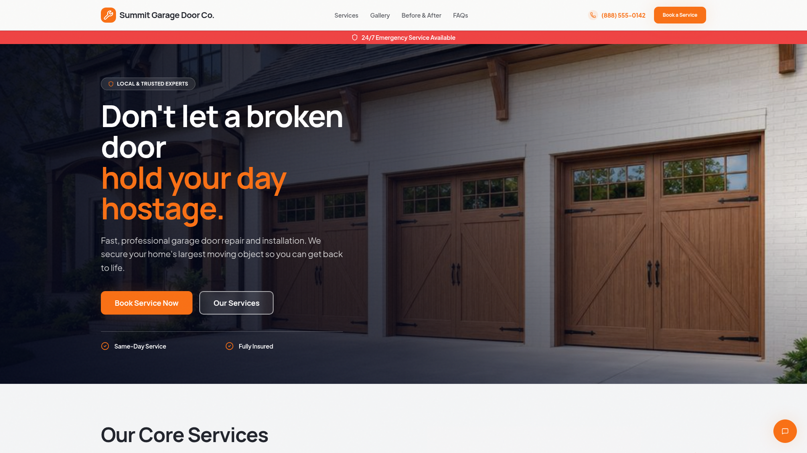
The sales pitch
Customers do not buy a repair. They buy their day back.
A garage-door problem arrives as stress: a trapped car, an exposed home, a strange noise, or a decision the homeowner does not know how to make. The application turns that uncertainty into a clear, safe, trackable journey.
01
Attract
Local positioning, strong imagery, services, pricing anchors, reviews and proof.
02
Convert
Maya, FAQs and a guided request form reduce uncertainty and collect the right details.
03
Operate
Requests, chats, bookings and urgent jobs arrive in one owner workspace.
04
Grow
Services, photos, transformations and reviews become the next wave of trust.
“One promise, one customer journey, one place to run the business.”
Marketing expert view
Every section answers a buying objection and keeps a clear service CTA within reach.
Product expert view
The interface moves from discovery to action without making the customer learn the business.
Business expert view
The owner gets a single operating loop from lead intake through schedule, proof and retention.
Act I · Discovery
The website meets the homeowner at the moment of need.
The opening message names the real pain—lost time—and pairs it with strong local trust signals, emergency availability, direct calling and a prominent booking path. Service cards translate technical work into recognizable outcomes with starting prices that make the next step feel concrete.
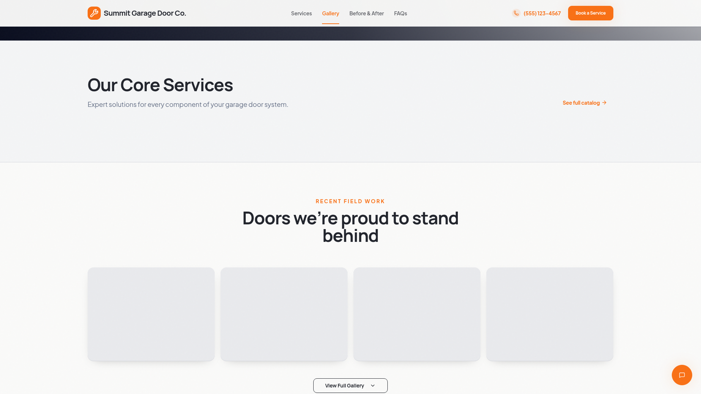
Conversion strategy
- Urgency without panic
- Local and insured positioning
- Choice between calling, exploring and booking
Commercial strategy
- Starting prices qualify expectations
- Service entities improve lead routing
- Expandable catalog supports cross-sell
Act II · Trust
Proof replaces hesitation.
Homeowners can see the quality of the work before sharing their phone number. The gallery proves range. Before-and-after comparisons make value visible. Reviews answer the question every local-service buyer asks: “Did people like me trust this company and feel good afterward?”
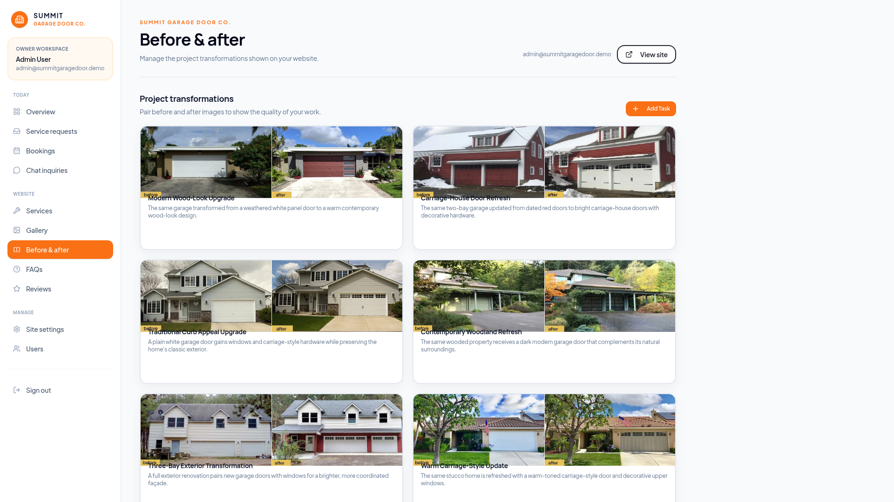
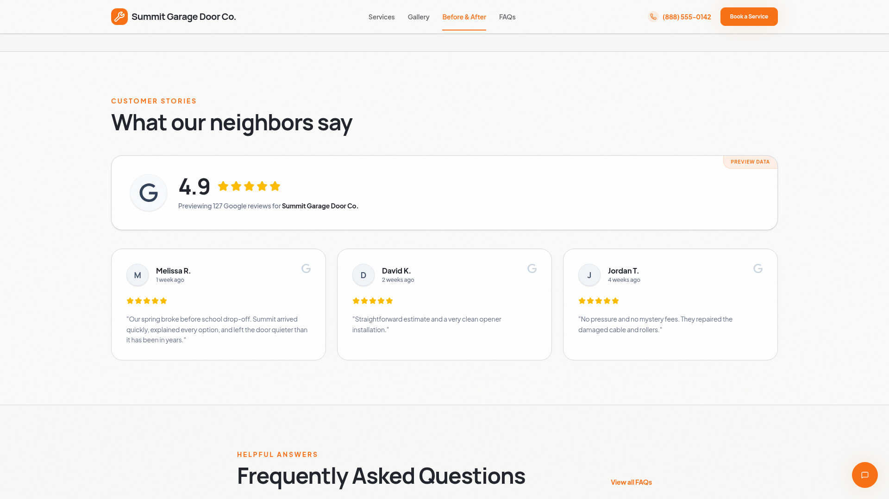
Trust is not a paragraph. It is a system of photographs, transformations, reviews and consistent answers.
Act III · Conversation
Maya turns uncertainty into a safe next step.
Maya speaks like a calm local coordinator—not a generic diagnostic bot. She can acknowledge casual conversation, explain services and pricing, understand Metro Atlanta coverage, collect context and move the customer toward a request without pressuring them.
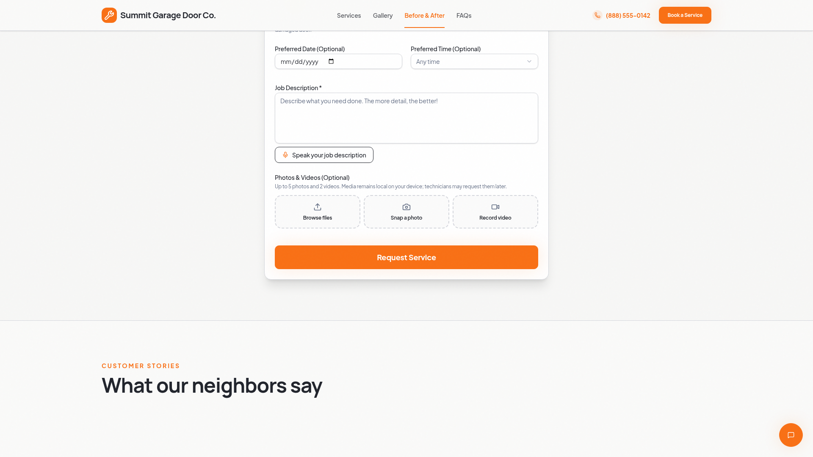
Playwright verifiedHuman small talk
Customer: “hru?”
Maya: “I’m doing well, thanks for asking. I’m here to help you get your garage door sorted out—what’s it doing today: stuck, noisy, slow, or refusing to open?”
Safety remains non-negotiable
Broken springs, cables, crooked doors and off-track situations trigger firm stop-use guidance. Maya never coaches a homeowner through high-tension repairs.
Interactive Playwright evidence: welcome state 7w7ky5; natural-response state w3v8np.
Act IV · Request
The form collects what dispatch actually needs.
The customer provides identity, contact details, job location, service category, urgency, preferred date and time, and a description. Voice input reduces typing. Photo and video options help customers prepare context while keeping media local until they choose to share it.

Immediate reassurance: After submission, the application shows “Request Received!” and explains that the team will be in touch to confirm the appointment.
The notification contract
Every important moment goes to the right inbox.
The operating rule is simple: service-request alerts, request confirmations and booking confirmations are communicated by default to the user-specified email address.
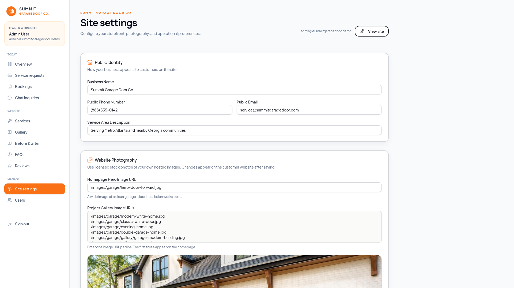
1
The owner chooses the email
Admin → Site settings → Public Email is the control point for the business address.
2
The system uses it by default
New request alerts, confirmation alerts and booking confirmation alerts route to the configured address.
3
The owner can change it anytime
Update and save the email in Admin Settings; subsequent alerts use the new address.
Current demo note: The live demo includes the editable Public Email field and in-app request confirmation. Production outbound email delivery must be connected to an email provider for these messages to be sent externally.
Act V · The owner wakes up to clarity
One dashboard answers: What needs attention now?
The overview prioritizes open requests, upcoming bookings and recent conversations. Instead of checking form tools, inboxes, spreadsheets and website editors, the owner starts with one queue and one schedule.
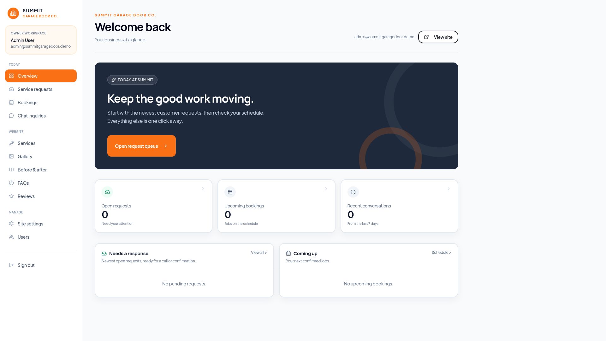
Revenue protection
New leads stay visible until they are worked.
Operational focus
Urgent and upcoming work is separated from content administration.
Team confidence
Everyone sees the same operating picture.
Act VI · Lead control
Every request becomes a managed opportunity.
The service-request workspace organizes new requests, emergencies, scheduled work and pipeline value. Contact details, location, timing and status remain attached to the request, making follow-up faster and reducing the cost of forgotten leads.
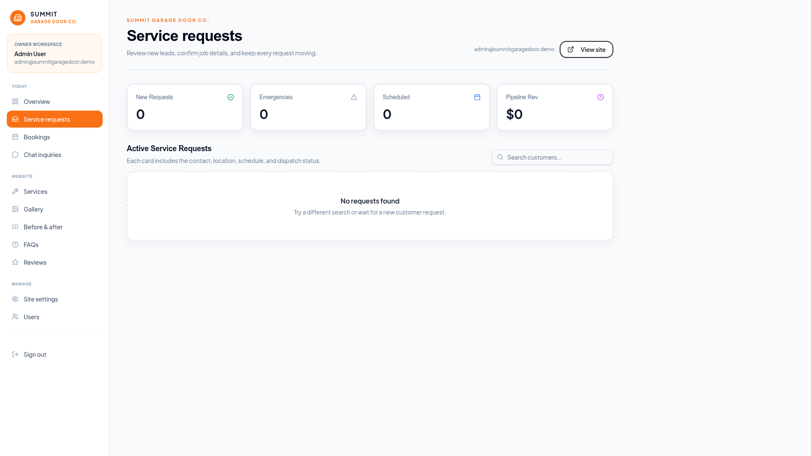
Fewer missed calls. Faster confirmation. A visible pipeline instead of inbox archaeology.
Act VII · Conversations become work
Maya does not create a dead-end chat transcript.
Customer-care conversations flow into a visible inquiry queue. The owner can see who is new, who has received a reply and which conversation should become a service request. The result is a clean bridge from questions to revenue.
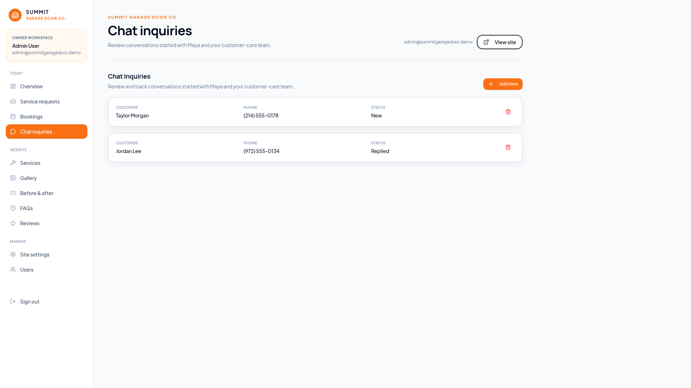
For the customer
No need to repeat the whole story when moving from Maya to the request form.
For the business
Conversation status gives the team a shared follow-up language.
Act VIII · Confirmation and dispatch
A request becomes a real commitment on the schedule.
Once the team confirms timing, the booking appears in the Bookings workspace. This separates requested preferences from confirmed appointments—a small product decision that prevents accidental promises and protects customer trust.
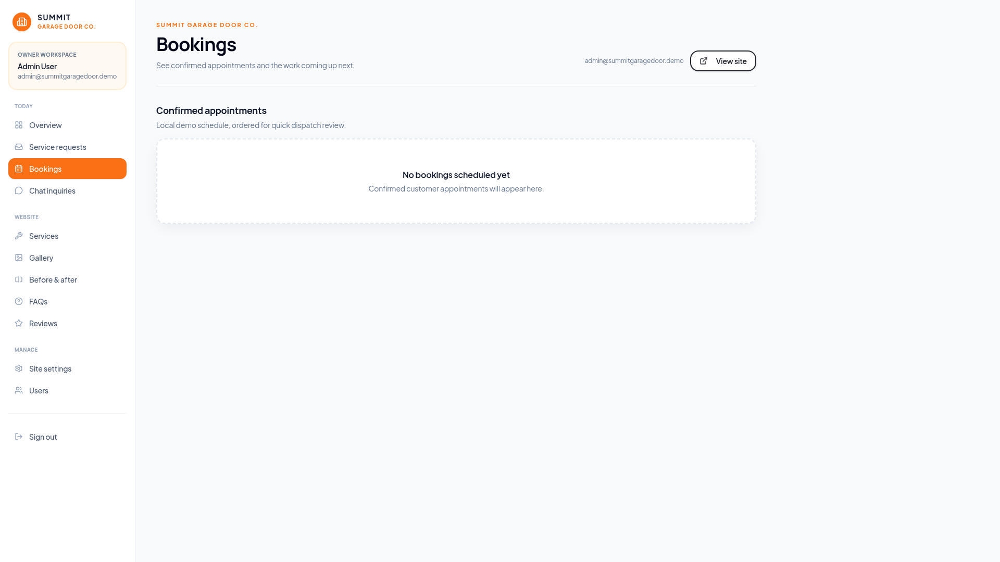
Email moments in this stage: the business receives the booking alert at the configured email, and the customer receives the appropriate booking confirmation through the connected production email workflow.
Act IX · The website stays commercially current
The owner controls the offer without rebuilding the site.
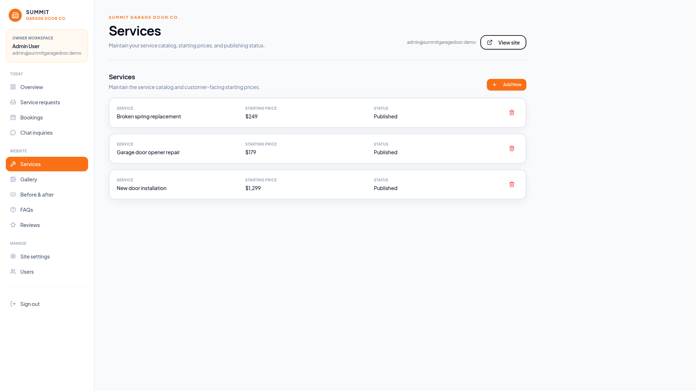
Service catalog
Keep offers, starting prices and publishing status aligned with the real business.
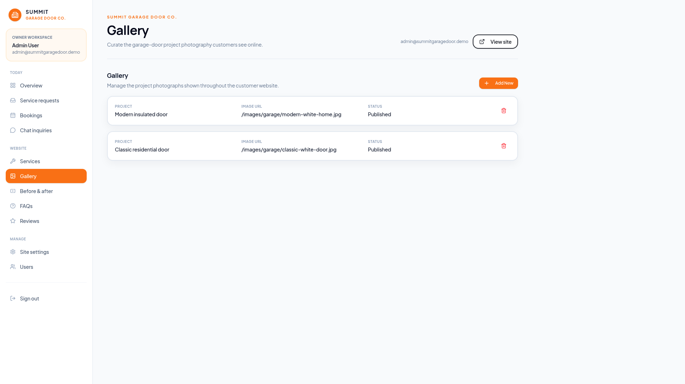
Project photography
Turn completed jobs into evidence for tomorrow’s customer.
Fulfillment feeds marketing: every completed job can become a service story, image, transformation and review.
Act X · Knowledge and reputation compound
The business gets smarter and more trusted over time.
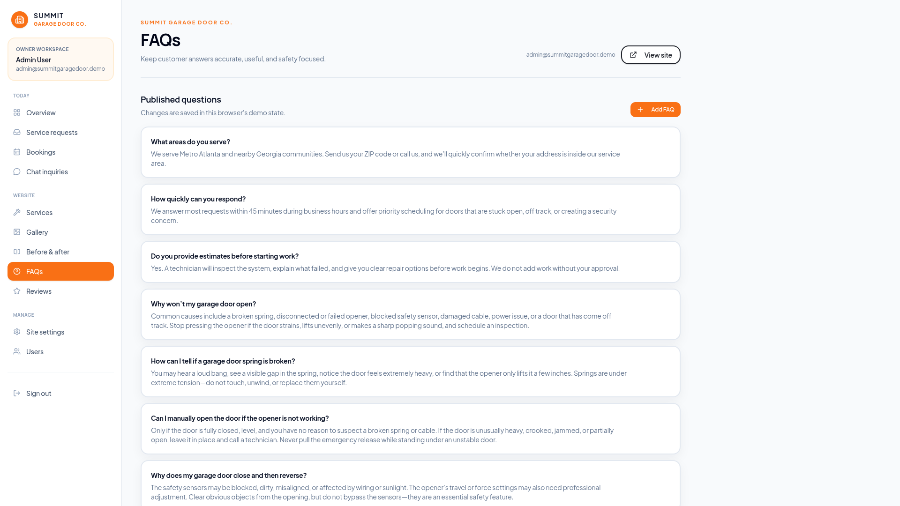
Safety-focused FAQs
Update recurring answers once; customers and Maya benefit everywhere.
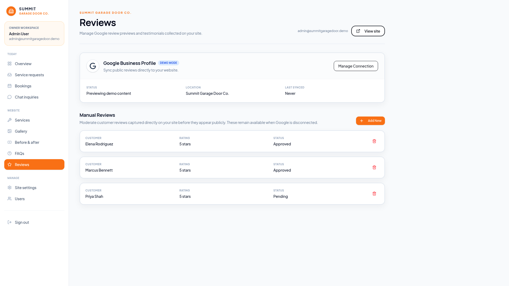
Review operations
Preview Google Business Profile content and manage manual testimonials.
Marketing is no longer separate from operations. The questions customers ask improve the FAQ library. The jobs the team completes improve the photo library. The experiences the business delivers improve the review library.
Act XI · People and permissions
The business can grow beyond one owner.
Staff users and roles establish the foundation for delegation. A dispatcher can focus on requests and bookings while an administrator manages the offer, website and business configuration.
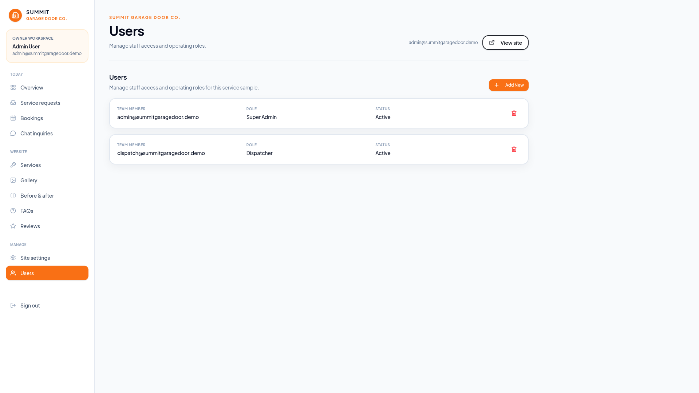
Owner
Strategy, configuration and visibility.
Dispatcher
Lead response, confirmation and schedule.
Marketing
Services, photos, transformations, FAQs and reviews.
Complete screen inventory
Customer and admin experience captured end to end.
Customer · Hero and primary CTA

Customer · Gallery
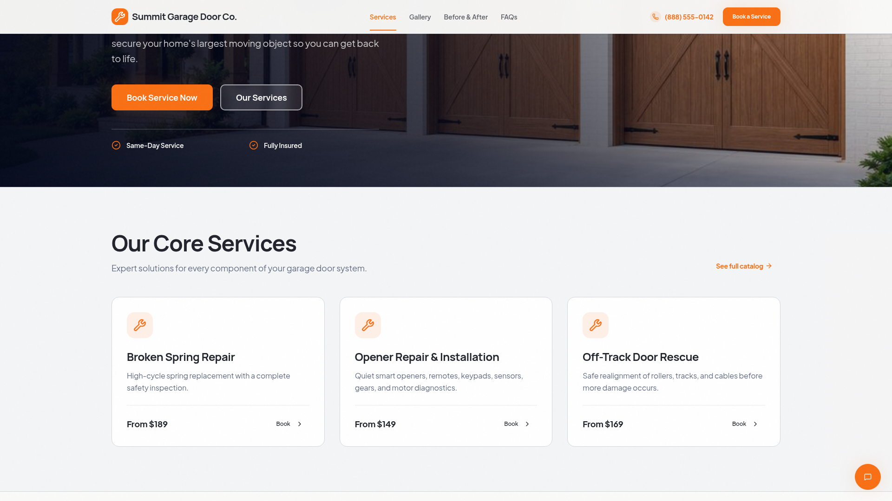
Customer · Before & after
Customer · Booking form
Customer · Reviews and trust
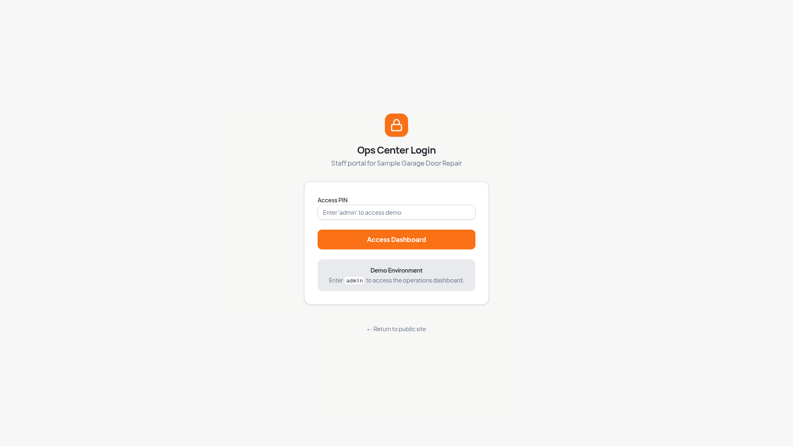
Admin · Login
Additional interactive Playwright evidence captured: expanded service catalog e07kqk; expanded gallery u6w47z; booking 01v7dg; expanded FAQ cy1eou; Maya welcome 7w7ky5; Maya response w3v8np.
The close
Do not just build a website.
Build the operating system for trust.
Summit’s application makes the business lifecycle simple because the customer journey and the owner workflow are the same connected story.
1
Win attention
Local value, proof and a confident offer.
2
Earn the conversation
Human customer care with strong safety boundaries.
3
Capture and confirm demand
Structured requests, owner-selected email alerts and confirmed bookings.
4
Run the day
One dashboard for requests, conversations, schedule and responsibilities.
5
Turn work into growth
Every job strengthens services, proof, FAQs and reputation.
“The result is not more software. It is fewer dropped balls, faster customer confidence, and a business that becomes easier to operate as it grows.”
Live experience: https://sample-garage-door-repair.samples.creativecoders.tech/